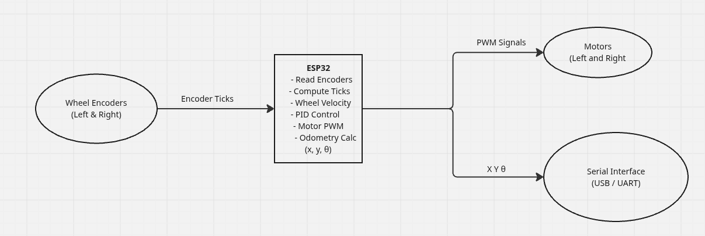

Software Architecture
Overview
This section describes the complete software architecture of Titan Robot, including the ROS 2 system running on the main computer and the firmware running on the microcontroller. The software is designed using a layered approach that cleanly separates high-level autonomy from low-level real-time control.
Titan Robot uses ROS 2 Humble for all high-level robot functionality and an ESP32 microcontroller programmed using the Arduino IDE for motor control and odometry computation.
High-Level Architecture
The software stack is divided into two main layers:
- High-Level ROS 2 Layer (Raspberry Pi)
- Low-Level Firmware Layer (ESP32)
These layers communicate through a serial interface.
High-Level ROS 2 Layer (Raspberry Pi)

The main computer runs Ubuntu 22.04 with ROS 2 Humble and is responsible for:
- Robot bringup and system coordination
- Mapping and localization
- Autonomous navigation
- Sensor processing
- Visualization and user interaction
Core ROS 2 Components
Robot Bringup
- Launch files initialize:
- Robot description (URDF)
- Sensor drivers
- ESP32 communication node
- RViz2 configuration
Navigation Stack
- Uses ROS 2 Navigation (Nav2)
- Consumes:
- Odometry data
- Laser scan data
- Produces:
- Velocity commands (
/cmd_vel)
SLAM and Localization
- SLAM Toolbox used for:
- Online mapping
- Localization using pre-built maps
- Uses laser scans and odometry as inputs
Perception (Variant Dependent)
- V2: Image pipeline from Pi Camera
- V3: RGB-D and depth processing from RealSense camera
- Used for object detection and advanced perception tasks
ROS 2 Communication Interfaces
Key Topics
| Topic | Direction | Description |
|---|---|---|
/cmd_vel |
Subscribed | Velocity commands from navigation or teleop |
/odom |
Published | Robot odometry from encoder data |
/scan |
Published | 2D LIDAR scan data |
/tf |
Published | Coordinate frame transforms |
/camera/image |
Published | Camera image stream (V2 / V3) |
Low-Level Firmware Layer (ESP32)

Firmware Overview
The ESP32 runs custom firmware developed and flashed using the Arduino IDE.
Its primary responsibility is real-time motor control and odometry estimation.
The firmware operates independently from ROS 2 timing constraints, ensuring stable and deterministic motor behavior.
Firmware Responsibilities
The ESP32 firmware performs the following tasks:
- Reads wheel encoder tick counts
- Computes wheel velocities
- Applies PID control to motors
- Computes robot odometry
- Exchanges data with the Raspberry Pi via serial
Odometry Computation
- Wheel encoders generate tick counts
- Tick counts are converted to wheel rotation
- Wheel rotation is used to calculate:
- Linear displacement
- Angular displacement
- Robot pose (
x,y,θ) is estimated using differential-drive kinematics - Odometry data is sent over serial to the Raspberry Pi
Velocity Command Flow
- Navigation stack or teleop publishes
/cmd_vel - Raspberry Pi serial node sends velocity commands to ESP32
- ESP32:
- Converts velocity commands to wheel targets
- Runs PID control loop
- Updates motor PWM outputs
Serial Communication
- Bidirectional serial communication between ESP32 and Raspberry Pi
- Data exchanged:
- Incoming: linear and angular velocity commands
- Outgoing: odometry and status information
- Simple, structured protocol for reliability
ROS 2 Odometry Publishing
On the Raspberry Pi:
- Serial data is received from ESP32
- Encoder-based odometry is decoded
- Odometry is published as:
/odomtopic- Corresponding TF transforms (
odom → base_link)
This odometry is then used by: - SLAM Toolbox - Navigation Stack - Visualization tools
Timing and Synchronization
- ESP32 runs control loops at a fixed rate
- Raspberry Pi handles ROS 2 timing
- Time stamps are applied on the ROS 2 side
- Sensor fusion compensates for accumulated odometry error
You now have a complete understanding of Titan Robot’s software architecture 🚀